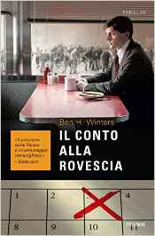

Autore: Ben H. Winters
Editore: Piemme
Pagine: 312
Genere: Thriller fantascientifico
Anno Pubblicazione: 2016
I libri che concludono una Trilogia o più in generale una Serie sono tendenzialmente quelli sui quali riponiamo più aspettative, ci si approccia ad essi con un certo timore, con uno stato d’animo diverso, ma soprattutto con una profonda speranza nel cuore: con gli epiloghi si chiude un’era, si chiudono storie, amori, amicizie, si mette la parola Fine su un mondo che per un periodo di tempo più o meno lungo ci ha tenuto piacevolmente compagnia, e la voglia di leggere qualcosa di veramente bello e soddisfacente grida le sue ragioni al mondo intero fin dalle prime pagine.
A volte, però, anche le speranze possono essere disattese e così è successo con L’ultimo crimine, il capitolo conclusivo della Trilogia così ben congegnata e sviluppata da Ben H. Winters, uno dei pochi libri che ha saputo lasciarmi davvero con l’amaro in bocca e una leggera rabbia mista alla delusione di non aver trovato, in esso, quella degna conclusione che aspettavo.
Dopo essere fuggito da Concord e aver trovato rifugio altrove, il detective Hank Palace si ritrova a fare i conti nuovamente con una verità a cui non vuole sottomettersi: Nico, sua sorella, è ormai scomparsa, nessuno sa dove sia, cosa stia cercando di fare e soprattutto perché abbia voluto far perdere definitivamente le sue tracce. L’istinto e la tenacia di Hank, però, non hanno alcuna intenzione di darsi per vinti ed insieme ad un compagno di viaggio improbabile, una sorta di criminale che ha voluto accettare la sfida più per ego che per aiutare veramente, si metteranno alla ricerca dell’unica persona per la quale il detective darebbe la vita. Il tempo rimasto a loro disposizione è sempre meno e la fine del mondo per come lo conoscono è ormai vicina: riuscirà Hank a riabbracciare Nico per un’ultima volta?
Trovare le parole per descrivere le diverse sensazioni che ho provato leggendo il libro non è mai stato così difficile, nonostante io l’abbia terminato da qualche giorno sento ancora pressante la delusione con cui sono arrivata alle battute finali e la rabbia che ne è scaturita: quella de L’ultimo crimine è una trama con un potenziale altissimo, una di quelle che anche solo leggendone metà comincia a trasmettere emozioni dotate di una forza incredibile, una di quelle che ti fanno desiderare di tornare a casa in men che non si dica per lasciarti il mondo alle spalle e tuffarti tra le sue pagine, peccato però che l’autore non sia stato in grado di svilupparla come, invece, molto probabilmente meritava. Rispetto ai primi due capitoli della Trilogia, in particolare, questo terzo libro risulta essere meno incisivo e troppo melodrammatico, la storia a tratti grottesca e gli spunti che avrebbe dovuto offrire non si sono mai rivelati nella loro interezza dando un’idea del libro stesso troppo semplicistica, ma soprattutto assolutamente sottotono rispetto ad un estro narrativo che era letteralmente esploso con il primo volume. Sulla stessa scia segue, poi, il finale che, onestamente, non credo di aver apprezzato particolarmente: il fatto che l’autore abbia deciso di concludere le vicende del detective Palace in questo determinato modo dopo aver lanciato messaggi di Speranza così forti da far realmente credere in essa mi ha lasciato stupita e, non lo nego, fortemente perplessa. Tutto questo, però, nulla toglie al personaggio magnificamente ideato da Ben Winters: anche questa volta Hank Palace è riuscito a sostenere un intero romanzo ed una trama ambiziosa senza sfumature, dando sfoggio della sua incredibile umanità, del suo amore per una sorella così profondamente diversa da lui e delle sue innegabili capacità investigative.
Infine, con piacere ho ritrovato al suo interno quell’ironia che fin dal primo libro ha caratterizzato l’intera vicenda, quell’elemento che ha saputo stemperare la tensione di cui i romanzi si sono fatti forza e che, qui in particolar modo, ha reso più godibile una lettura che, altrimenti, sarebbe risultato fin troppo pesante.
Dire, quindi, che quella de L’ultimo crimine sia stata una lettura semplice da affrontare è impossibile, molte cose mi hanno scossa e lasciata basita, ma aver ritrovato un protagonista così accattivante ed originale mi ha ripagata di tutto quanto e, sebbene non si tratti di un libro che rileggerei, non posso negare che la Trilogia nel suo complesso ha saputo lasciarmi sensazioni bellissime, ha saputo tenermi un’ottima compagnia divertendomi e soprattutto con essa ho potuto conoscere un autore che, sono certa, in futuro non deluderà.

L'AUTORE - Ha vinto sia l'Edgar Award che il Philip K. Dick Award, rispettivamente i due premi più importanti per la narrativa crime e per quella di fantascienza, con la serie di Hank Palace. Un omicidio alla fine del mondo, e i successivi due volumi, che Piemme pubblicherà nel corso del 2016, sono stati bestseller del New York Times, sono in corso di traduzione in 15 Paesi e diventeranno presto una serie tv, prodotta da Fremantle Media. Ben Winters vive a Indianapolis con la moglie e tre figli.
IL LIBRO - Hank Palace è diventato da poco detective ed il caso che ha tra le mani potrebbe cambiargli la vita se solo il mondo non fosse alle porte della sua fine: pochi mesi prima, infatti, un gruppo di scienziati ha individuato una sorta di asteroide che ben presto impatterà con la superficie terrestre e la minaccia che grava sul capo di tutti gli uomini ha portato molti di essi, soprattutto nella cittadina di Concord...
 IL LIBRO - Mancano 77 giorni, ormai, alla distruzione del globo terrestre. Solo 77 giorni.
A causa dell’asteroide che minaccia l’intera razza umana il ruolo del poliziotto, come molti altri, non riveste più la rilevanza che solo fino a qualche mese prima vantava...
Se siete lettori appassionati visitate questo blog
ilcoloredeilibri.blospot.it